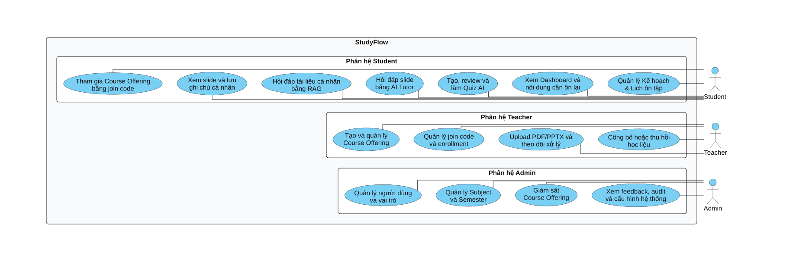
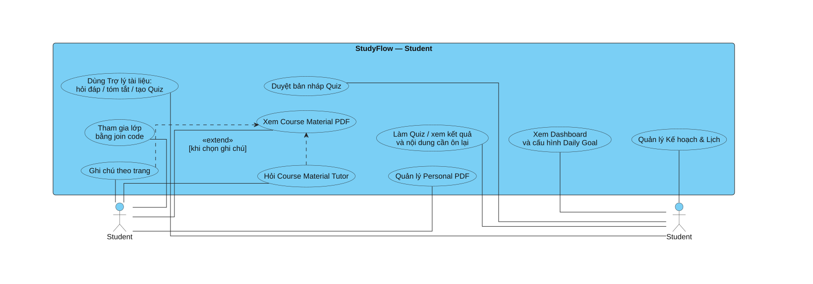
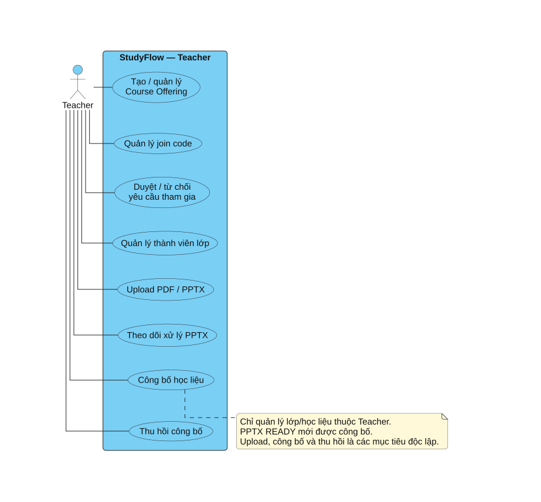
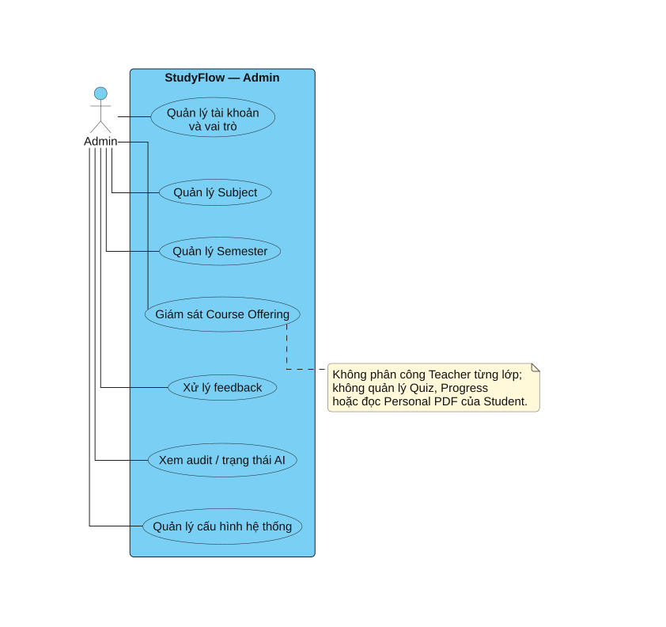

StudyFlow — Bộ sơ đồ báo cáoStudyFlow — Bộ sơ đồ báo cáo
Thiết kế tham khảo màu theo từng loại biểu đồ Visual Paradigm; số hình theo ba chương Markdown hiện hành. Mở SVG để phóng to, PNG để chèn Word; PDF chỉ tổng hợp sơ đồ, không thay thế báo cáo gốc.
Quy ước / đối chiếu PDF cũ · Tải PDF sơ đồHình 2.1. Biểu đồ Use Case tổng quát toàn hệ thống StudyFlow.
Chèn vào Chương 2 tại đoạn dẫn cùng số hình. Hình dưới thể hiện hình 2.1 — use case tổng quát studyflow. Khổ ngang vì hình dài.

Hình 2.1. Biểu đồ Use Case tổng quát toàn hệ thống StudyFlow.- Tác nhân Student tương tác với bảy nhóm chức năng chính: tham gia Course Offering, học bằng slide và ghi chú, Personal RAG, Slide Tutor, Quiz AI, Dashboard và Kế hoạch & Lịch ôn tập.
- Tác nhân Teacher tạo và quản lý Course Offering, quản lý join code/enrollment, upload PDF/PPTX, theo dõi xử lý và chủ động công bố hoặc thu hồi học liệu.
- Tác nhân Admin quản lý người dùng, vai trò, Subject, Semester, giám sát Course Offering, feedback, audit và cấu hình hệ thống; Admin không mặc định được đọc dữ liệu học tập cá nhân của Student.
- Ba khung chức năng nằm trong một System Boundary duy nhất của StudyFlow. Hình 2.2–2.4 tiếp tục phân rã nghiệp vụ theo từng vai trò để tránh đưa chi tiết luồng xử lý vào biểu đồ tổng quát.
- Biểu đồ phân định ranh giới nghiệp vụ rõ ràng: Giảng viên và Quản trị viên không can thiệp vào kho tài liệu cá nhân, nội dung hỏi đáp riêng tư, kết quả làm Quiz và lịch học của từng sinh viên.
SVGPNGNguồn / chú giải
Hình 2.2. Biểu đồ Use Case chi tiết phân hệ Sinh viên (Student).
Chèn vào Chương 2 tại đoạn dẫn cùng số hình. Hình dưới thể hiện hình 2.2 — use case phân hệ student. Khổ ngang vì hình dài.

Hình 2.2. Biểu đồ Use Case chi tiết phân hệ Sinh viên (Student).- Ký hiệu Student được lặp ở hai phía nhưng cùng biểu diễn một tác nhân; cách trình bày này rút ngắn association, giữ đường nối thẳng và không tạo thêm vai trò nghiệp vụ.
- Nhóm ca sử dụng lớp học phần: Sinh viên nhập mã mời (Join Class), khi được duyệt sẽ có quyền xem slide bài giảng trực tuyến, ghi chú slide (slide_notes), và đặt câu hỏi cho Slide AI Tutor (<<extend>> từ việc xem slide).
- Nhóm ca sử dụng tài liệu cá nhân và RAG: Sinh viên tải lên tài liệu PDF cá nhân; chọn tài liệu để tạo phiên hội thoại hỏi đáp RAG. Hỏi đáp bắt buộc kiểm tra căn cứ và trích dẫn số trang; đây là quy tắc nội bộ, không tách mỗi bước xử lý thành một Use Case.
- Nhóm ca sử dụng Quiz AI: Sinh viên chọn tài liệu và nhập prompt để hệ thống sinh bản nháp Quiz; sinh viên duyệt bản nháp (Accept/Reject/Regenerate) trước khi tiến hành làm bài; hệ thống tự động chấm điểm và trích xuất danh sách câu sai liên kết về nguồn học liệu.
- Nhóm ca sử dụng tiến độ và kế hoạch: Sinh viên thiết lập Daily Goal, quản lý các đầu việc Task trên giao diện lịch tuần và theo dõi thống kê chuỗi ngày học Streak trên Dashboard.
SVGPNGNguồn / chú giải
Hình 2.3. Biểu đồ Use Case chi tiết phân hệ Giảng viên (Teacher).
Chèn vào Chương 2 tại đoạn dẫn cùng số hình. Hình dưới thể hiện hình 2.3 — use case phân hệ teacher. Khổ dọc vì hình ngắn hoặc vừa.

Hình 2.3. Biểu đồ Use Case chi tiết phân hệ Giảng viên (Teacher).- Giảng viên trực tiếp khởi tạo lớp học phần (Create Course Offering) dựa trên danh mục Môn học và Học kỳ do Nhà trường/Admin ban hành mà không cần chờ phê duyệt lớp.
- Quản lý thành viên lớp: Giảng viên xem danh sách yêu cầu tham gia, thực hiện phê duyệt (Approve Enrollment) để cấp quyền cho sinh viên hoặc từ chối (Reject Enrollment). Giảng viên có quyền tạo mới hoặc vô hiệu hóa mã mời (Manage Join Code).
- Quản lý học liệu: Giảng viên tải lên tài liệu bài giảng PPTX và tài liệu tham khảo PDF vào thư viện tài liệu của mình; thực hiện thao tác công bố (Publish Document) tài liệu vào một hoặc nhiều lớp học phần đang giảng dạy, hoặc thu hồi (Revoke Publication) khi cần thiết.
SVGPNGNguồn / chú giải
Hình 2.4. Biểu đồ Use Case chi tiết phân hệ Quản trị viên (Admin).
Chèn vào Chương 2 tại đoạn dẫn cùng số hình. Hình dưới thể hiện hình 2.4 — use case phân hệ admin. Khổ dọc vì hình ngắn hoặc vừa.

Hình 2.4. Biểu đồ Use Case chi tiết phân hệ Quản trị viên (Admin).- Quản lý danh mục cốt lõi: Khởi tạo, cập nhật các Môn học (Subject) và Học kỳ (Semester), cấu hình thời gian mở đăng ký lớp.
- Quản lý tài khoản: Xem danh sách người dùng, kích hoạt hoặc khóa tài khoản vi phạm, điều chỉnh phân quyền người dùng.
- Giám sát vận hành: Theo dõi hoạt động của các lớp học phần (khóa hoặc lưu trữ khi cần); xem xét các báo cáo phản hồi (Feedback) và tra cứu nhật ký hệ thống (Audit Logs) để bảo đảm an toàn thông tin.
SVGPNGNguồn / chú giải